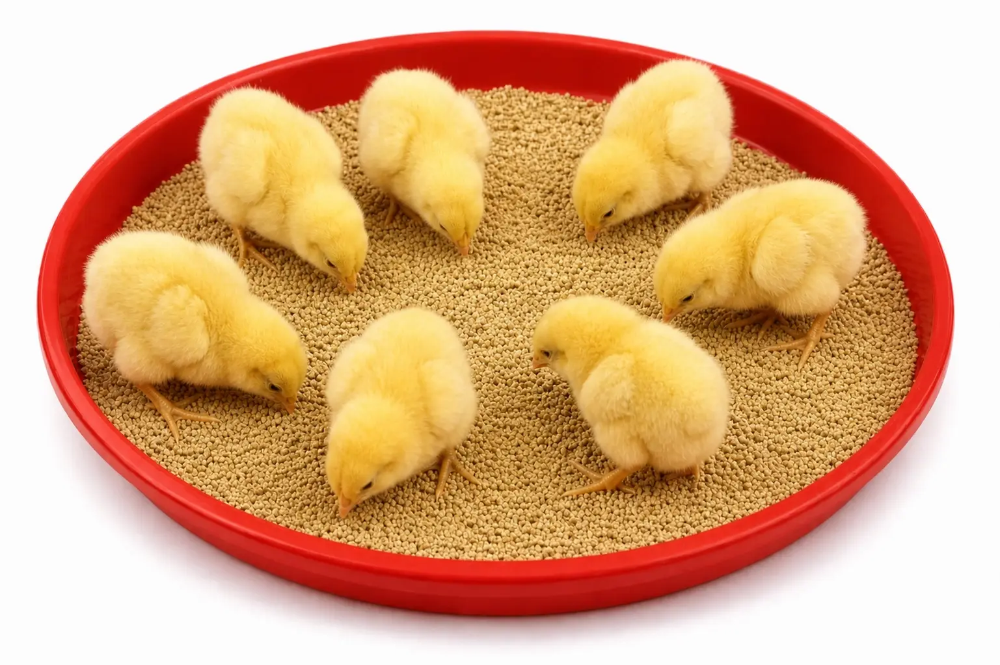
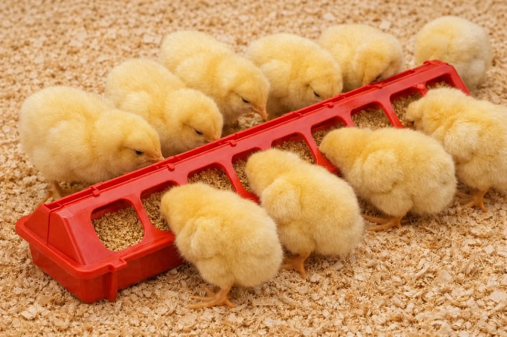
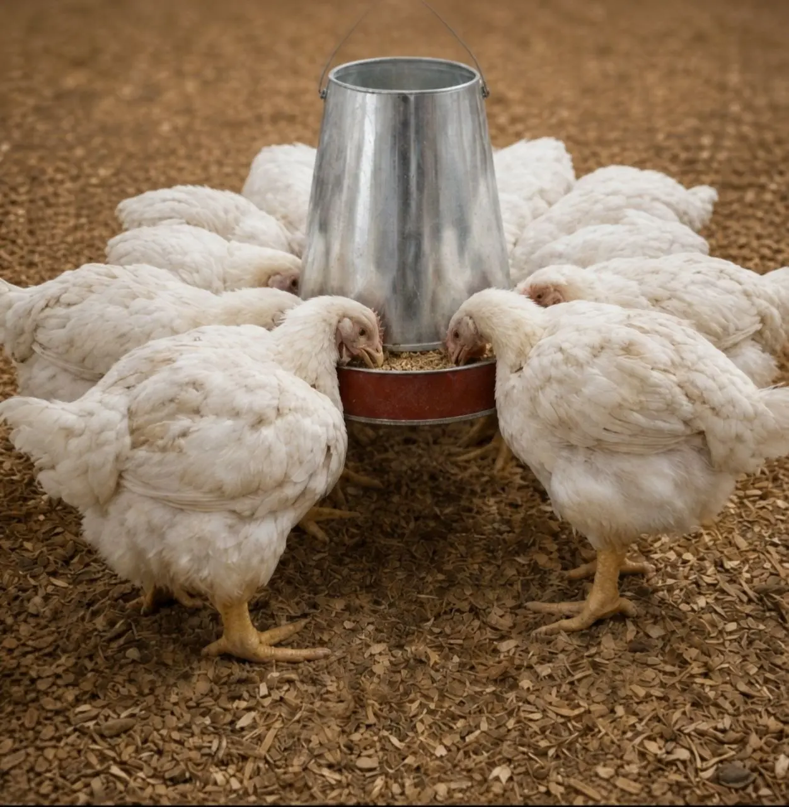
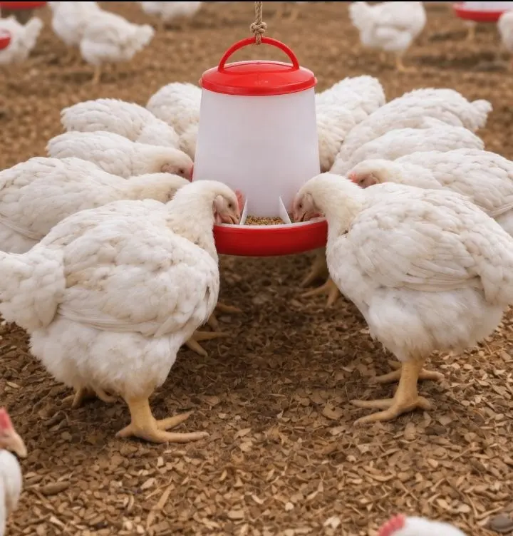
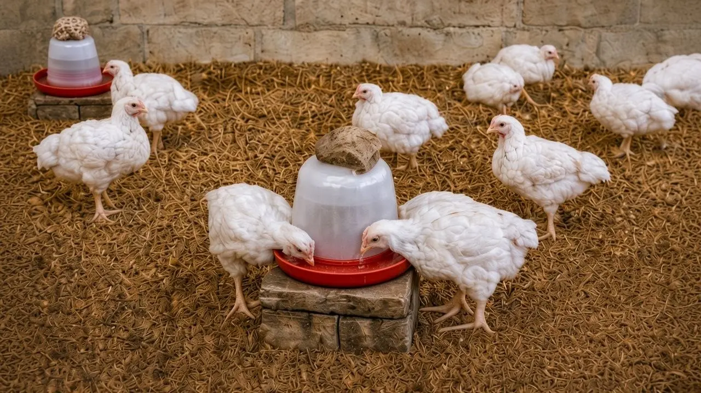
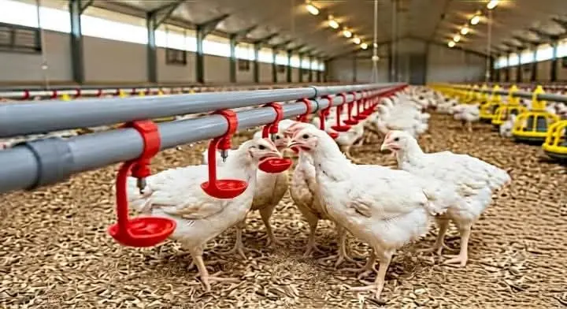

The poultry tip site
The poultry tip siteBroiler Site Selection, Housing and Equipment
Site Selection and Housing
Choosing the right site and designing appropriate housing are crucial steps in establishing a successful broiler farm. The location should be secure, well-drained to avoid waterlogging, far enough from residential areas to minimize odour issues, and easily accessible for transportation.
The house should be oriented with its long axis running east to west. This reduces the amount of direct sunlight entering through the side walls, helping to keep the house cooler, minimize heat stress on the birds, and allow for better cross-ventilation.
Housing needs differ between the two stages of growth. The brooding house — where birds are kept for the first 2 weeks under a controlled environment — should have walls enclosed fully from top to bottom, with only a few small windows, to keep the space warm and draft-free. Rather than building solid walls from the start, some farmers install iron gauze across the upper 65–75% of the wall from the outset, then temporarily cover it with tarpaulin during brooding to keep the space warm and draft-free — folding or removing the tarpaulin once the birds move into the rearing pen stage, so the gauze underneath can do its job of ventilating the space. The rearing pen — where birds are kept from after brooding until slaughter — needs far more airflow: walls should only be enclosed for the bottom 30–35% from ground level, with the rest left open and covered with iron gauze to keep out predators and pests while still allowing air to move freely through the house.
A few other construction factors matter as well. For roofing, aluminium or zinc sheets are commonly used. The roof should extend with deep overhangs of at least 1 to 1.5 metres (3–5 feet) beyond the side walls to shade open mesh sections and prevent driving rain from soaking the litter inside. For flooring, concrete is strongly preferred over bare earth, since it is far easier to scrub and disinfect thoroughly between batches, preventing lingering disease from carrying over to the next flock.


Ventilation and Litter Management
Ventilation matters just as much in day-to-day management as it does in the building's structure, particularly during the rearing pen stage. In an open-sided rearing pen, airflow comes primarily from the exposed wall area. Cross-ventilation — air entering from one side of the house and exiting the other — works far better than a single opening, since it keeps air actually moving rather than settling near one wall. Poor ventilation is closely linked to heat stress and ascites (fluid buildup caused by the heart struggling to supply enough oxygen), so it's worth checking regularly rather than assuming the structure alone is doing the job.
Litter management ties directly into this. Common materials include wood shavings and sawdust — whichever is most easily available and affordable in your area. The material itself matters less than keeping it dry throughout the growing cycle: wet litter, usually caused by leaking drinkers or poor ventilation, is one of the biggest drivers of ammonia buildup and disease. Litter should be checked regularly, especially around drinkers, with damp patches topped up as needed. If the litter becomes generally dirty or heavily soiled, it's best to remove it entirely and replace it with a fresh batch.
Feeding & Drinking Equipment
With the house itself in place, the next step is equipping it properly for the birds that will live there.
Chicks start on flat feeder trays or flip-top chick feeders in the first 7–10 days, since they can't easily reach into taller equipment. Over time, they're moved onto galvanized metal feeders or plastic tube feeders. These kinds of feeders hold more feed and reduce spillage compared to flat trays. They also allow birds to eat freely compared to the flip-top chick feeders. The galvanized metal feeder or plastic tube feeders should always be hung so the feeding point sits level with the base of the birds' necks — this height helps prevent feed wastage as birds grow. Also, the number of feeders needed scales with flock size: too few forces birds to compete for access, leading to uneven growth as smaller or weaker birds get pushed out.




Drinkers for broilers generally come in two kinds: nipple drinkers and manual drinkers (available in 4-litre or 10-litre sizes). Nipple drinkers feature small valves that release water when pecked, keeping litter dry and water clean, though they carry higher installation costs. Manual drinkers remain far more common among small-scale Nigerian poultry producers. Manual drinkers must be raised off the floor using wooden blocks or concrete bricks to prevent litter contamination. Placing a clean stone on top adds stability against birds bumping into them.


Brooding Heat & Lighting Management
For heating, equipment options include charcoal burners (charcoal stoves), 200-watt incandescent bulbs, or large kerosene lanterns — the right choice depends on local availability, cost, and power reliability in your location.


Lighting schedules directly impact growth rates depending on your production cycle:
- Short Cycle (5–6 Weeks): Requires continuous 24-hour lighting to maximize feed intake and speed up weight gain.
- Long Cycle (8–10 Weeks): Full lighting for weeks 1–2, reduced night lighting (~20 minutes) in week 3 to align with feed restriction, and natural daylight only from week 4 onward.
Farm Biosecurity Essentials
Biosecurity is your first line of defense against disease outbreaks. A disinfectant footdip must be placed at the entrance of the pen to sanitize footwear before anyone steps inside the pen. Additionally, make sure all wire netting and mesh are tightly sealed to prevent wild birds, rodents, and reptiles from entering. These animals may carry dangerous pathogens—such as Salmonella and Avian Influenza—and can quickly contaminate feed, water, and litter.